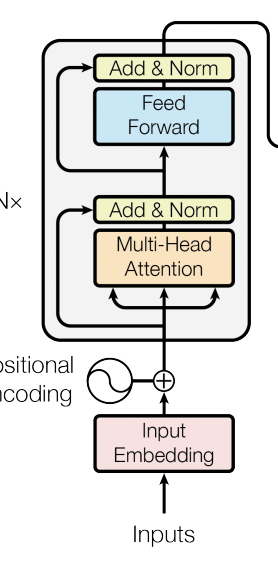
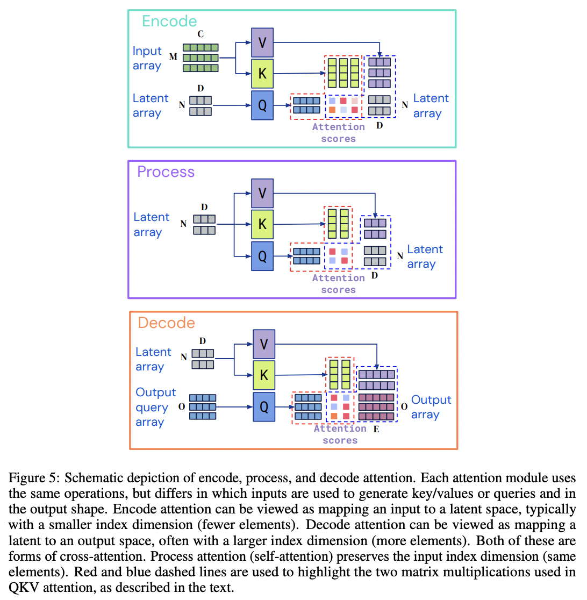

A General Purpose Deep Learning Architecture - Perceiver IO From Scratch
deep learning
code
from scratch
Author
Yann Dupis
Published
October 31, 2022
In recent years, we saw tremendous progress across all machine learning tasks from image classification, object detection, and translation, to question answering, text classification, and more. Main drivers of this progress are more compute resources, data, new training approaches such as transfer learning, and also more sophisticated neural network architectures. Fortunately these models are available at our fingertips. If you tackle a computer vision task, you can leverage the Pytorch Image Models (timm) library. As of now it contains more than 50 different types of architectures translating into 600 models which have different trade-offs in terms of accuracy and inference time, depending on the task. For NLP, you can use the popular transformer library from HuggingFace which offers almost 80k models based on about 140 different types of architectures.
Each of these neural network architectures, built upon each other by the research community, were able to achieve better performance thanks to very carefully hand-crafted inductive bias for each specific task. For example, CNNs used in computer vision models such as ResNet have a locality bias where they assume close pixels are related to each other. LSTMs, which used to be popular for NLP tasks before Transformers appeared, have a sequential bias where they process each element of a sequence one after another. However, because the inductive bias is hand-crafted for a specific task, existing architectures are often not able to generalize across multiple modalities. The Perceiver IO (Jaegle et al, 2021) architecture released by DeepMind in 2021 aims to solve this challenge and demonstrate they can achieve strong results across a wide variety of single-modal and multi-modal tasks such as: GLUE language benchmark, predicting optical flow between images, image classification, multi-modal video + audio classification, audio-video-label multi-modal autoencoding, etc.
In this blog post, we will implement a Perceiver IO architecture from scratch and we will apply it to two different domains: image classification and text classification. In conjunction to this blog post, I highly recommend watching the main author of the Perceiver IO paper Drew Jaegle’s talk, and reading this HuggingFace blog post. These resources, in addition to training several Perceiver models with the transformers library, inspired me to implement this architecture from scratch.
import mathimport numpy as npimport torchfrom torch import nnimport torch.nn.functional as F
/home/ydupis/Documents/datascience/yanndupis.github.io/venv/lib/python3.8/site-packages/tqdm/auto.py:22: TqdmWarning: IProgress not found. Please update jupyter and ipywidgets. See https://ipywidgets.readthedocs.io/en/stable/user_install.html
from .autonotebook import tqdm as notebook_tqdm
Transformers
The Perceiver architecture is based on the Transformer architecture (Vaswani et al., 2017). In this presentation, Drew Jaegle describes why transformers are a good candidate for general purpose architectures:
They don’t make specific assumptions about the domain.
They have general purpose inductive bias.
Position is a feature instead of being a constraint.
They mainly use matmuls, which are efficiently computed by GPU and TPU.
The cons are:
Attention scales quadratically based on the input.
Multilayer perceptron (MLP) scales linearly based on the input.
Transformers consist of: a self-attention module, multilayer perceptron (also called feed-forward layer), layer normalization, and skip connections. But really the heart of the transformers is their self-attention module, which the Perceiver architecture innovatively modified to make the module scalable. So let’s first implement the self-attention module, understand why it scales quadratically, and learn how the Perceiver architecture addresses this challenge.

Figure 1: Self-Attention with positional encodig from Attention Is All You Need (Vaswani et al 2017)
Self-Attention
To build up some intuition about the self-attention mechanism, I highly recommend Peter Bloem’s blog post or the natural language processing with transformers book. Later in this post, we will demonstrate how the perceiver can be applied to images. But let’s assume for now that our input is a sentence where each word of the sentence is represented by token embeddings.
The self-attention mechanism consists of the following steps:
Project the input (token embeddings in our case) into a query, key and value.
Compute the similarity between the query and the key using a dot product. The result of the dot product represents the attention scores.
Multiply the attention scores by a scaling factor to normalize their variance and apply a softmax so each column of the matrix, representing the attention weights, sums up to 1.
Compute the dot product between the attention weights and the values.
The main purpose of the self-attention mechanism is to produce a new representation of the token embeddings where now each new embeddings is a linear combination (or weighted average) of the original embeddings. This allows us to encode some contextual information. For example, we have the following sentence: “The tree bark is rough to the touch” and “I hope her dog doesn’t bark when I knock on the door.” In these two sentences, we have the word “bark” but each has a different meaning. In the first sentence, “bark” refers to the tree, and in the second sentence it refers to the dog. When applying the self-attention mechanism to the embedding “bark” the new embedding should give more weight to the word “tree” in the first sentence and “dog” in the second one in order to encode this context.
Let’s apply the self-attention module to a tensor of shape (1, 3, 5). We will assume the input is a sentence containing three words, each represented by an embedding token of length 5.
We can see the attention score has a shape of (1, 3, 3) and the output shape is (1, 3, 5). Let’s now apply the self-attention mechanism to an input containing 10 words and see how it impacts the size of attention score tensor and the output.
For an input of shape (1, 10, 5), the new attention score shape is (1, 10, 10). So as you can see the attention score scales quadratically based on the input. Same thing happens for the second dot product between the weights and the values, and the output shape is (1, 10, 3). Therefore it increases linearly. Later we will see that the output of the self-attention module is fed into an MLP layer. Because the output of the self-attention module scales linearly based on the input, the MLP layer will also scale linearly based on the input.
Ok, so let’s learn how Perceiver IO is addressing the transformer scalability issue while maintaining its generality property.
Cross-Attention
Perceiver IO introduces the idea of using a cross attention module to encode the input into a latent space. To do so, instead of passing the input to the query, Perceiver IO uses a latent variable, which has smaller dimension than the input. You can think about this latent variable as the learned initial stated for RNN.
Figure 2: cross-attention from Perceiver IO encoder from (Jaegle et al 2022)
You can find other examples of cross-attention for computer vision in the papers: End-to-End Object Detection with Transformers (Carion et al, 2020), and Object-Centric Learning with Slot Attention (Locatello et al, 2020).
Let’s say we have our previous input of shape (1, 10, 5) and a new latent variable of shape (1, 2, 3). The attention score now has a shape of (1, 2, 10). So instead of scaling quadratically based on the input size, the score scales linearly based on the size of the latent variable which can be controlled. The second matrix of the cross-attention module also scales linearly. But more importantly, the output, which the MLP layer will use, also scales linearly based on the latent size instead of the input size. The output now has a shape of (1, 2, 3) instead of (1, 10, 3).
Excellent! We now have implemented a cross-attention module which scales linearly based on the latent variable, which will allow us to compute on larger inputs such as images or longer text sequences. Later, you will see that the Perceiver IO architecture also uses a self-attention module on the latent array. So let’s create a general attention module which can be parametrized to become a self-attention or cross-attention module depending on our need.
Until now, we have implemented a single head attention, but most transformers are multi-head attention. The benefits of having multiple heads are that each head can focus on different aspects of an image (edges, colors, etc.) or a sentence, instead of on a single aspect.
We can simply create a multi-head attention layer by instantiating several heads and concatenating their outputs. Usually we also apply a linear layer to the final output. Note that it’s possible to avoid instantiating an AttentionHead for each head and concatenating their outputs. You could have the linear layers with number of output features equal to number of channels per head * number of heads for the query, key and value. Then you could reshape the output from the query, key and value to (batch_size, num_heads, time (N or M), number of channels per head). As an example, you can check the transformers implementation.
Voilà, we have our multi-head attention layer which can become a self-attention or cross-attention layer by setting the is_cross_attention parameter. Since we have implemented the main building block, we are ready to implement the full Perceiver architecture!
Perceiver Architecture
The Perceiver architecture consists of three main build blocks: encoder, processor and decoder. The input gets first encoded into a latent array, then the latent representation gets refined via several processing layers. Finally, the latent gets decoded into an output. As you can see in the diagram below, the encoder and decoder are using a cross-attention module, and the processor is using a self-attention module. What’s amazing with the Perceiver architecture is that it can handle any modalities thanks to the encoder and decoder modules. Additionally, the size of the inputs and outputs is not a problem anymore since they both use a cross-attention module where the latent size is independent of the input size.

Figure 3: encode (cross-attention), process (self-attention) and decode (cross-attention) attention modules from Perceiver IO (Jaegle et al 2022)
Let’s implement the encoder!
Encoder
The Perceiver encoder module is very similar to the encoder you could find in Bert architecture except it uses cross-attention with a latent variable. In addition to the cross-attention module we just need to add:
A multi-perceptron module: two fully connected layers processing each latent vector independently, a GELU activation, and a dropout layer.
Two layer-normalization layers
Two skip connections
Ok, let’s see how we can combine these components to build our encoder.
Excellent, we have successfully implemented our encoder layer. In fact, the processor and the decoder use the exact same ingredients, except the processor will use a self-attention module. So let’s refactor our encoder to use PerceiverLayer which can be parametrized to use a cross-attention or self-attention module.
Our PerceiverEncoder layer now looks much simpler with our new generic PerceiverLayer.
Processor
Our Processor layer is going to be responsible for refining the latent representation we obtained from the encoder. So this layer has a single input, the latent array, and we apply a self-attention module in conjunction with an MLP layer, layer-normalization, and skip connection (i.e PerceiverLayer configured as self-attention).
We are almost ready to combine everything to create a complete architecture. We just need to implement the decoder module.
Decoder
The perceiver decoder will map the latent array to an output array. To do so, we can query the latent array with a query vector. Note that this query vector can be hand-designed, or learned embeddings, or a function of the input. For this blog post, we will use learned embeddings. To query the latent array returned by the processor, we simply need to compute the cross-attention between a learned query variable and the latent array. The query should have the same number of elements as the desired output.
As expected, the output of the decoder returns 10 elements matching the number of labels.
Perceiver IO = Encoder + Processor + Decoder
We now have all the building blocks to create a complete PerceiverIO architecture. As discussed earlier, the latent variable for the encoder and the query variable for the decoder are learned. So we can create a LearnedEmbedding layer to instantiate latent and query variables. Otherwise, it’s straight-forward. The encoder takes the input array as an input, and the latent variable then returns a latent array. Then this latent array is fed into the processor. Finally the latent array is queried by the decoder with a learned query. The output of our decoder will be the logits, which we will use to compute our loss when training the image and text classification task.
Voilà, we have now our full Perceiver IO architecture. Let’s now dive into how in the authors of the Perceiver IO paper pre-process an image or text to obtain the input arrays which will be fed into the encoder.
Image Classification
Pre-Processing
To pre-process an image, the authors of the Perceiver IO paper use different techniques involving 2D Fourier position embeddings with 2D convolution or flatten pixel values. However, for this example, we will use another approach used in the paper, where the authors flatten the pixels by applying a 1D convolution and add learned absolute positional 1D position embeddings. Based on the paper, the other approaches provide better results, but what’s unique with this pre-processing approach is that it doesn’t provide any information about the 2D image structure.
Let’s assume we have a tensor representing a batch of images of shape (batch_size, 3, 32, 32). So each image has a width and height of 32 and 3 channels. To pre-process this image we will:
Apply a Conv1D layer to increase the number of channels, for example to 256. So now, let’s say our output has a shape of (batch_size, 256, 32, 32).
Transform the tensor returned by Conv1D from channel first to channel last. Our new shape is (batch_size, 32, 32, 256).
Flatten the height with the width of the image. So now we have a shape of (batch_size, 1024, 256).
Instantiate a trainable 1D position embedding for each pixel with, for example, 256 channels. So the shape of the embedding is (batch_size, 1024, 256).
Concatenate the output of the Conv1D layer with the trainable 1D position embedding based on the last dimension. So the final shape will be (batch_size, 1024, 512).
That’s it! Let’s implement it.
class PositionalEncoding(nn.Module):def__init__(self, index_dim, num_channels=128):super().__init__()self.index_dim = index_dimself.num_channels = num_channelsself.position_embeddings = nn.Parameter(torch.randn(index_dim, num_channels))def forward(self, batch_size):returnself.position_embeddings.expand(batch_size, -1, -1)class ImagePreProcessor(nn.Module):def__init__(self, in_channels, out_channels, spatial_downsample, position_encoding_index_dim, position_encoding_out_channels, ):super().__init__()self.in_channels = in_channelsself.out_channels = out_channelsself.spatial_downsample = spatial_downsampleself.postion_encoding_index_dim = position_encoding_index_dimself.conv1d = nn.Conv2d( in_channels=in_channels, out_channels=out_channels, kernel_size=(1, 1), stride=(spatial_downsample, spatial_downsample), )self.pos_enc = PositionalEncoding( position_encoding_index_dim, num_channels=position_encoding_out_channels )def forward(self, inputs): batch_size = inputs.shape[0]# Increase the number of channels while keeping same height and width inputs_post_conv1d =self.conv1d(inputs)# Make channel last inputs = torch.moveaxis(inputs, 1, -1)# Flatten from (batch_size, img_size, img_size, num_channels) to (batch_size, img_size*img_size, num_channels) inputs_post_conv1d = torch.reshape( inputs_post_conv1d, [batch_size, np.prod(inputs.shape[1:-1]), -1] )# Instantiate learned 1D positional embeddings pos_encoded =self.pos_enc(batch_size)# Concat inputs post conv1d with 1D positional embeddingsreturn torch.cat([inputs_post_conv1d, pos_encoded], dim=-1)
We can validate we get the expected output shape using an image of shape (3, 32, 32) with Conv1D output channels of 256 and a 1D positional embeddings with 256 channels.
Excellent, as expected our tensor has a shape of (1, 1024, 512). That’s all we need to pre-process our images.
We can finally train an image classification model using the Perceiver architecture!
Training
To demonstrate we can use the Perceiver IO architecture to classify images, we will use the MNIST dataset. Here, we are using a simple dataset to validate our model can classify images. However, note that in the paper, the authors were able to achieve strong results on the ImageNet dataset, especially when the model was pre-trained and the pre-processor used 2D convolution and MaxPooling layers.
To train this model we will use the Adam optimizer with weight decay from Pytorch because we’re working with a simple dataset. However, in practice, it’s recommended to use an Adam algorithm with a fix weight decay as introduced in Decoupled Weight Decay Regularization (Loshchilov et al, 2019). You can find an implementation in the transformer library. It’s also recommended to use a scheduler with a warm-up phase. If you want to learn more about the importance of using adaptive optimizers and learning rate warm-up when training transformers from scratch, I highly recommend this blog post from Borealise AI.
After training our model we achieved ~97% accuracy. If we were spending more time on tuning the model, using a 2D Fourier or 2D convolutional pre-processor, it’s very likely we could achieve a higher accuracy. Nonetheless, we were able to classify images with the Perceiver model with zero information about the 2D structure of the images.
Let’s now explore how we can use the same architecture for a text classification task.
Text Classification
Pre-Processing
For this example, we will use the AG_NEWS dataset which contains a corpus of news articles. Each article is classified as one of the following categories: World, Sports, Business or Sci/Tech.
With Perceiver IO, tokenization is extremely simple: you just need to convert the string to raw UTF-8 bytes. You don’t need to apply more sophisticated tokenizers such as WordPiece or SentencePiece or BPE, etc. Then for the numericalization process, we will just convert each byte to a byte ID. Finally, we will pad the sequence to a max sequence length. The main reasons why Perceiver IO aims to get rid of tokenizers is because they tend to perform less well on rare words, and they don’t transfer well from one language to another.
In the paper implementation, the authors have some reserved tokens such as [BOS], [EOS], [SEP], etc., to represent the beginning of the sentence and the end of the sentence. For simplicity, we will just convert the sentence to raw bytes, then ID.
/tmp/ipykernel_420991/1393707225.py:8: UserWarning: The given buffer is not writable, and PyTorch does not support non-writable tensors. This means you can write to the underlying (supposedly non-writable) buffer using the tensor. You may want to copy the buffer to protect its data or make it writable before converting it to a tensor. This type of warning will be suppressed for the rest of this program. (Triggered internally at ../torch/csrc/utils/tensor_new.cpp:1111.)
encoded = torch.frombuffer(inputs, dtype=torch.uint8).to(torch.int32)
We can see the number of tokens matches the number of characters in the original sentence. Additionally, the word “Hello” repeats twice.
Unfortunately, when training the model with this tokenizer to classify the articles, I discovered the model was converging very slowly and didn’t give strong results. Instead, we will use a simple word tokenizer. I think one of the reasons I was getting poor results on this task with the byte tokenizer was because the presence of certain words is highly correlated with the topics in the news articles. Here, we are training the model from scratch, so the model starts without a language representation. Therefore it’s harder for the model to identify that certain sequences of bytes represents certain words which are relevant to the classification tasks. Usually these models get pre-trained on a masked language modeling task (fill in the missing/masked word in the sentence) to build a language representation, then gets fine-tuned on a text classification task. During the first step the model is able to build a language representation using the bytes tokenizer. As demonstrated in the paper, the authors get very strong results on the Glue benchmark. I tried to fine-tune a Perceiver IO model from the transformer library using a byte tokenizer on this task, and I also got good results. Therefore, the challenges probably appear when training the model from scratch with byte tokenizers on certain tasks such as text classification.
from torchtext.data.utils import get_tokenizerfrom torchtext.vocab import build_vocab_from_iteratortokenizer = get_tokenizer("basic_english")def yield_tokens(data_iter):for _, text in data_iter:yield tokenizer(text)vocab = build_vocab_from_iterator(yield_tokens(train_iter), specials=["<unk>"])vocab.set_default_index(vocab["<unk>"])
Next step is to implement a padding function so all the sequences in the batch will have the same length. If the length of the sequence exceeds the maximum sequence length, it will be truncated.
def pad(max_sequence_length, inputs, pad_value=0): input_len = inputs.shape[1]# Truncate sequence if exceeds max sequence lengthif input_len > max_sequence_length: inputs = inputs[:max_sequence_length]# Pad sequence with pad value if shorter the max sequence length pad_len = max_sequence_length - input_len padded_input = torch.nn.functional.pad(inputs, pad=((0, pad_len)), value=pad_value)return padded_input
Now that we have our tokenizer and padding function, we can create a collate_batch function. This function will be used by our DataLoader to tokenize and pad each sentence contained in the batch.
MAX_SEQUENCE_LEN =256def collate_batch(batch): label_list, text_list = [], []for (_label, _text) in batch:# Convert labels [1, 2, 3, 4] to [0, 1, 2, 3] for loss function label_processed = _label -1 label_list.append(label_processed)# Tokenize and numericalize sentence tokenized_text = torch.unsqueeze( torch.tensor(vocab(tokenizer(_text)), dtype=torch.int64), 0 )# Pad and truncate the tokenized sentence to match MAX_SEQUENCE_LEN padded_text = pad(MAX_SEQUENCE_LEN, tokenized_text) text_list.append(padded_text) label_list = torch.tensor(label_list, dtype=torch.int64) text_list = torch.cat(text_list, dim=0)return text_list.to(device), label_list.to(device)
We are just missing one piece of the puzzle before starting to train our model: a text processing layer. This processing layer is very similar to the one you could find in a Bert model. It consists of:
Converting each token in the sentence to embeddings
Representing the position of each token as embeddings
Adding the token embeddings to the function embeddings
We can finally train our model to classify news articles. First we create a Dataloader for the training and evaluation datasets using the collate_batch function previously defined.
Then we instantiate the Perceiver model. This is the exact same model we used for the image classification task, except we use a text processor layer, set the number of labels to 4, and adjust the input_dim parameter to match the embedding length for each token.
~91% accuracy on the evaluation set, not bad. With the same architecture we were able to tackle two distinct tasks.
Conclusion
By showing you how we can implement this architecture from scratch, I hope I’ve given you a better idea about how the Perceiver architecture can solve a wide variety of tasks by just modifying the pre-processing and post-processing steps while keeping the rest of the architecture tasks agnostic. In this post, we focused our efforts on image classification and text classification tasks, but there’s still so much more you can do. In the transformers library, as well as Niels Rogge’s blog post, you can learn how to implement other pre-processor and post-processor modules to tackle a wide variety of tasks, such as masked language model, optical flow, and more. We could easily extend these modules to question answering or object detection as well. Where this architecture really shines is with multi-modal tasks. One example is this multi-modal auto-encoding task where the authors were able to accurately reconstruct multi-modal inputs consisting of a sequence of images, audio recordings, and class labels. In the perceiver IO paper, the authors were even able to replace the original transformer model in AlphaStar (Arulkumaran et al, 2019) and match state-of-the-art results. Honestly, the possibilities are endless, so go have fun :).